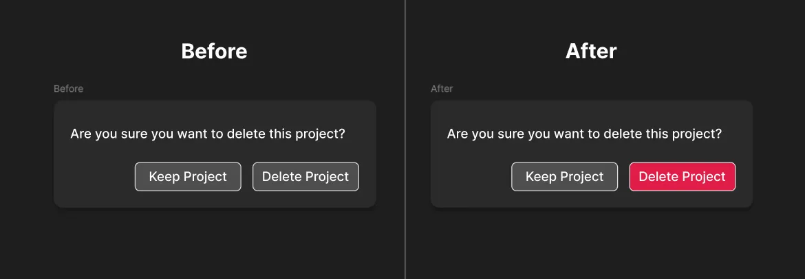
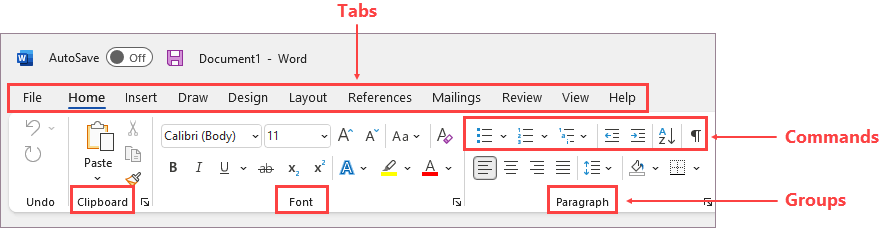
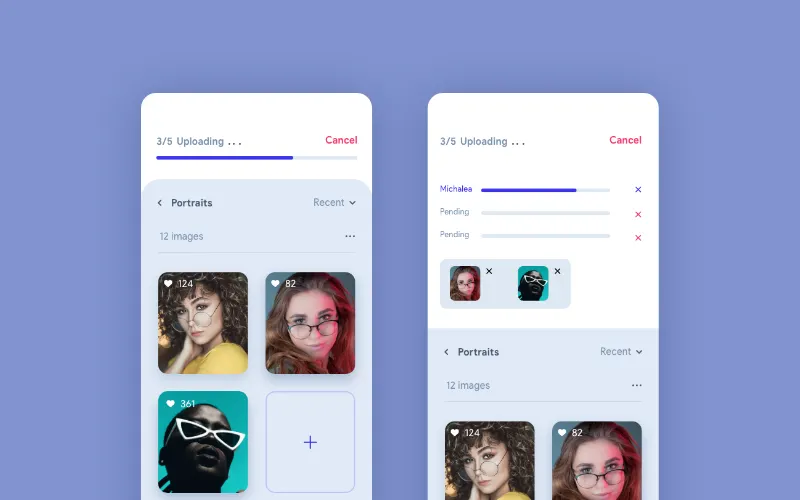
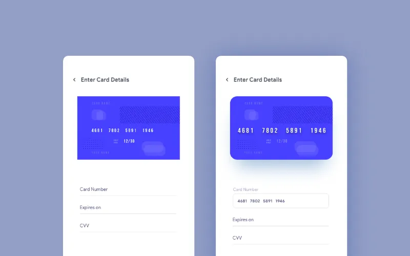
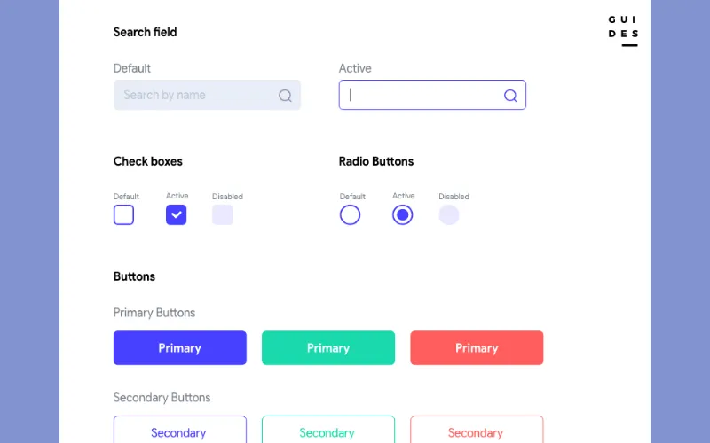
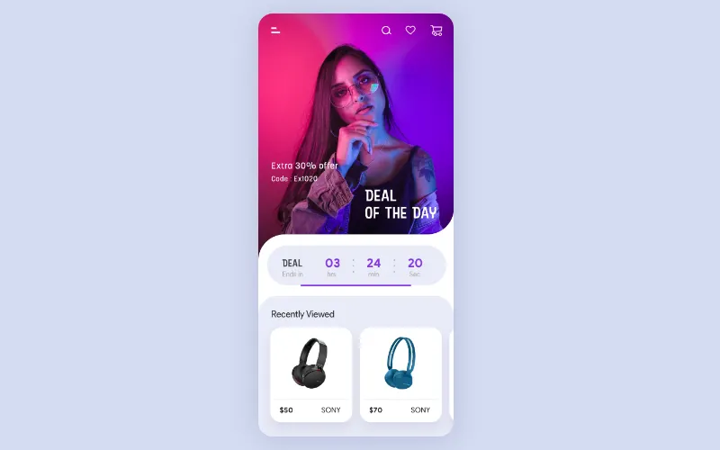
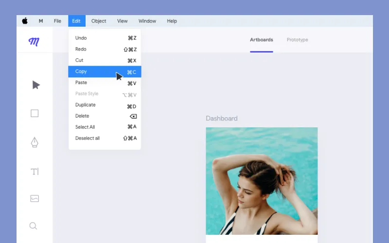
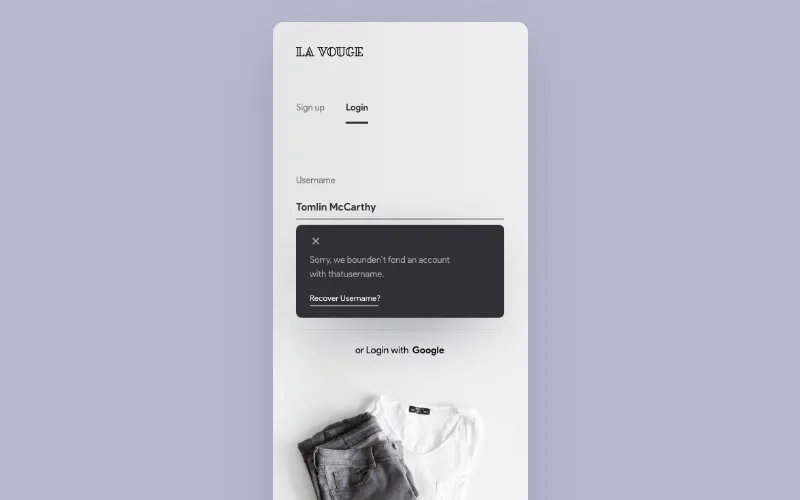
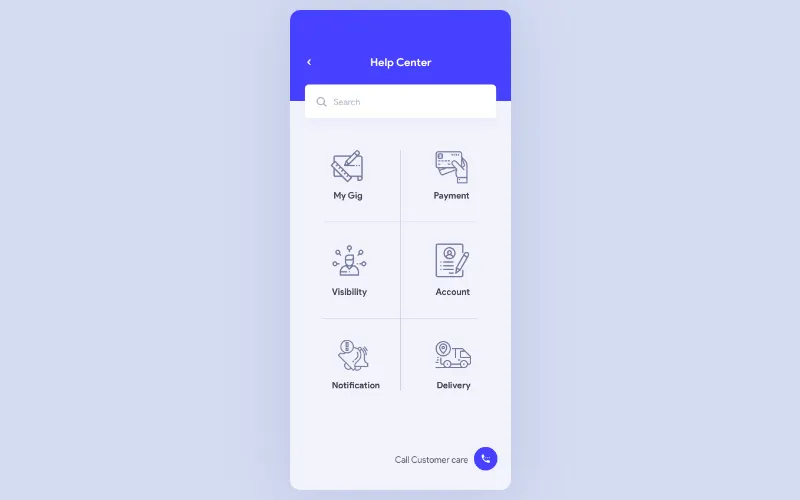

← Voltar para Aulas
### Faculdade Donaduzzi # Desenvolvimento de Interface Gráfica **Aula 3: Metas, Aspectos da Usabilidade e Leis do Design** --- **Prof. Guilherme de Araujo Gabriel** 1º Semestre - ADS
## Objetivos da Aula * Compreender que usabilidade é operacionalizada por metas específicas (objetivas e subjetivas). * Aprender e aplicar princípios consagrados de design (heurísticas de Jakob Nielsen e regras de Ben Shneiderman).
## 1. O que é Usabilidade na prática? A usabilidade assegura que os produtos sejam fáceis de usar, eficientes e agradáveis. * O foco do **design de interação** é otimizar as interações. * Permite que as pessoas realizem suas atividades de forma eficaz.
### Na Prática Para não ficar apenas na teoria, utilizam-se: * **Metas de Usabilidade** (Objetivas) * **Metas da Experiência do Usuário** (Subjetivas) Ambas servem para avaliar objetivamente um sistema.
## 2. As Seis Metas de Usabilidade **(Objetivas)** * Eficácia (Effectiveness) * Eficiência (Efficiency) * Segurança (Safety) * Utilidade (Utility) * Capacidade de Aprendizagem (Learnability) * Capacidade de Memorização (Memorability)
### Eficácia e Eficiência * **Eficácia (Effectiveness):** O sistema faz o que se espera dele? Permite aprender bem, trabalhar e acessar informações? * **Eficiência (Efficiency):** Ajuda a realizar tarefas rapidamente e com menos passos.
### Eficácia e Eficiência * *Exemplo:* Compra com "1-click" da Amazon. <img src="./assets/1-eficiencia-eficacia.png" width="700" style="display: block; margin: 0 auto;"> <small style="display: block; color: gray;">Fonte: Autoria própria</small>
### Segurança e Utilidade * **Segurança (Safety):** Protege contra condições perigosas e ações acidentais. * *Exemplos:* Evitar botão "Deletar" junto a "Salvar", ter recurso "Desfazer", caixas de confirmação. * **Utilidade (Utility):** Propicia a funcionalidade **certa**. * *Exemplo:* Software contábil excelente em cálculo de restituições. Um software de desenho só com polígonos teria baixa utilidade.
### Segurança e Utilidade  <small style="display: block; color: gray;">Fonte: Stop Designing Your “Delete” Buttons Like Your “Save” Buttons. (Acessado em 22/02/2026)</small>
### Aprendizado e Memorização * **Aprendizagem (Learnability):** Quão fácil é aprender a usar? * *A Regra dos 10 min:* Um iniciante deve usar sistemas não-críticos em menos de 10 minutos. * **Memorização (Memorability):** Facilidade de lembrar como usar após ter aprendido. * *Estratégias:* Ícones óbvios e lógicos, estruturar em categorias relevantes.
### Aprendizado e Memorização  <small style="display: block; color: gray;">Fonte: Customize the ribbon in Office. (Acessado em 22/02/2026)</small>
## 3. Metas de Experiência do Usuário **(Subjetivas)** Contraponto entre a eficiência das máquinas e a emoção humana. O design se preocupa com a qualidade da experiência. Envolve sistemas que sejam: * Satisfatórios, agradáveis, divertidos, interessantes, úteis, motivadores e esteticamente apreciáveis.
### O Equilíbrio e o Conflito As metas de usabilidade e as de experiência **podem ser incompatíveis**. * Um monitoramento de usina estritamente seguro não precisa ser "divertido". * Um videogame "fácil demais" (alta usabilidade) deixa de ser um desafio, perdendo a diversão. > O contexto de uso e os usuários é que ditam as prioridades!
## 4. O que são Heurísticas e Princípios de Design? * **Princípios de Design / Heurísticas:** Regras de ouro ou lembretes prescritivos para o desenvolvedor no dia a dia. *Diferença:* Metas são **amplas** ("Mantenha o sistema seguro"). Heurísticas são **específicas** ("Forneça saídas claramente indicadas").
### 1. Visibilidade do status do sistema Informações e feedback em tempo razoável (ex: ícone "carregando").  <small style="display: block; color: gray;">Fonte: 10 Usability Heuristics for User Interface Design. (Acessado em 22/02/2026)</small>
### 2. Compatibilidade com o mundo real Linguagem do usuário, sem jargão técnico orientado ao sistema.  <small style="display: block; color: gray;">Fonte: 10 Usability Heuristics for User Interface Design. (Acessado em 22/02/2026)</small>
### 3. Controle do usuário e liberdade "Saídas de emergência" claras ao entrar em locais por engano. <small style="display: block; color: gray;">Fonte: 10 Usability Heuristics for User Interface Design. (Acessado em 22/02/2026)</small>
### 4. Consistência e padrões Diferentes ações ou palavras não devem sugerir o mesmo conceito. Siga padrões.  <small style="display: block; color: gray;">Fonte: 10 Usability Heuristics for User Interface Design. (Acessado em 22/02/2026)</small>
### 5. Prevenção de Erros Um design cuidadoso impede um erro antes de ele ocorrer. <img src="./assets/8-heuristica-prevencao-erros.webp" width="700" style="display: block; margin: 0 auto;"> <small style="display: block; color: gray;">Fonte: 10 Usability Heuristics for User Interface Design. (Acessado em 22/02/2026)</small>
### 6. Reconhecimento em vez de memorização Torne as opções visíveis. Não force o usuário a lembrar informações do passo anterior.  <small style="display: block; color: gray;">Fonte: 10 Usability Heuristics for User Interface Design. (Acessado em 22/02/2026)</small>
### 7. Flexibilidade e eficiência de uso Aceleradores e atalhos de teclado para usuários experientes (atende aos dois públicos).  <small style="display: block; color: gray;">Fonte: 10 Usability Heuristics for User Interface Design. (Acessado em 22/02/2026)</small>
### 8. Estética e design minimalista Diálogos não devem conter informações irrelevantes. Menos ruído. <small style="display: block; color: gray;">Fonte: 10 Usability Heuristics for User Interface Design. (Acessado em 22/02/2026)</small>
### 9. Ajuda em Erros Mensagens sem códigos, com problema e a solução clara.  <small style="display: block; color: gray;">Fonte: 10 Usability Heuristics for User Interface Design. (Acessado em 22/02/2026)</small>
### 10. Ajuda e documentação Fácil de achar, passo a passo e focada na tarefa da pessoa.  <small style="display: block; color: gray;">Fonte: 10 Usability Heuristics for User Interface Design. (Acessado em 22/02/2026)</small>
## 6. As Regras de Ben Shneiderman ### Manipulação Direta Interfaces onde o usuário domina o ambiente digital de maneira visual. * **Representação contínua:** Objetos e ações sempre visíveis. * **Ações reversíveis e feedback:** Rápidas de desfazer, usuário perde o medo de explorar. * **Ações físicas:** Clicar/arrastar em vez de sintaxe complexa de comandos.
### A Arte das Mensagens de Erro Lidando com a frustração do usuário: * **Sem tom condenatório:** Evite palavras como "FATAL", "ILEGAL", "RUIM". * **Precisão e Clareza:** Seja específico! Não diga "ERRO INVÁLIDO", diga "Escolha um nome com 20 caracteres minúsculos". * **Sem códigos:** Usuário não entende cadeias hexadecimais (0x00F3A).
## Prática (Miniteste) 🕵️♂️ Vamos observar juntos um sistema (ex: portal da faculdade, loja famosa). * Qual **Heurística de Nielsen** o sistema acerta em cheio? * Qual regra ele viola criticamente?
## Referências <div style="font-size: 0.5em; text-align: left;"> ### Imagens e Mídias * **[1] Eficiência e Eficácia :** Autoria própria. * **[2] Exemplo Segurança e Utilidade:** [Stop Designing Your “Delete” Buttons Like Your “Save” Buttons](https://medium.com/@rakeshbandlaa/stop-designing-your-delete-buttons-like-your-save-buttons-9bb8055073a8). Acesso em: 22 Fev. 2026. * **[3] Exemplo Aprendizado e Memorização:** [Customize the ribbon in Office](https://support.microsoft.com/en-us/office/customize-the-ribbon-in-office-00f24ca7-6021-48d3-9514-a31a460ecb31). Acesso em: 22 Fev. 2026. * **[4] Exemplo Heurísticas de Jakob Nielsen:** [10 Usability Heuristics for User Interface Design](https://uxdesign.cc/user-experience-is-one-of-the-hottest-topics-in-day-today-designers-life-fb314978e1ff). Acesso em: 22 Fev. 2026. ### Bibliografia Consultada * **LOWDERMILK, Travis.** *Design centrado no usuário: um guia para o desenvolvimento de aplicativos amigáveis.* São Paulo: Novatec Editora Ltda, 2013. 182 p. * **ROGERS, Yvonne.** *Design de interação: além da interação humano-computador.* 3. ed. Porto Alegre: Bookman, 2013. 585 p. * **SOMMERVILLE, Ian.** *Engenharia de software.* 10. ed. São Paulo: Pearson Education do Brasil, 2018. 756 p. </div> <small>Apresentado por: Guilherme de Araujo Gabriel</small>